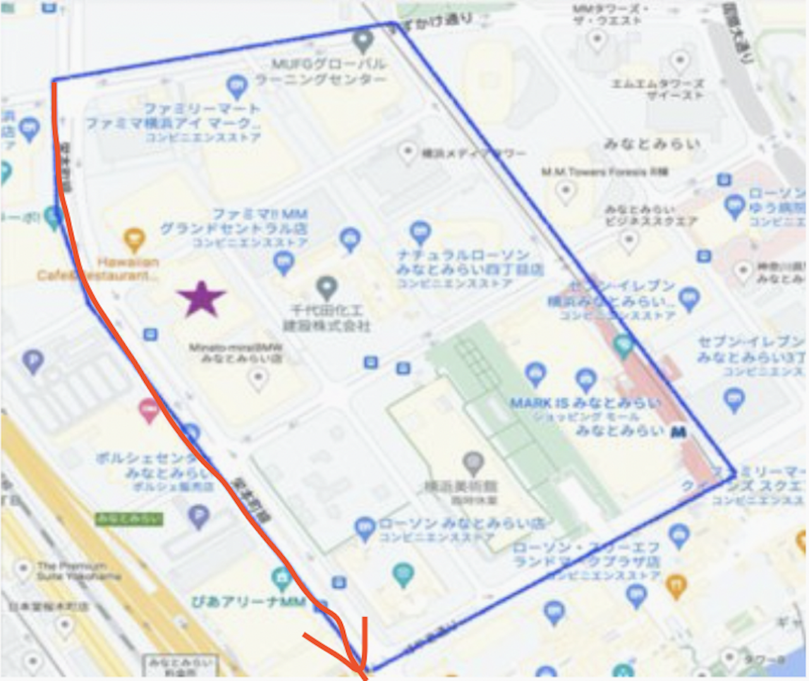
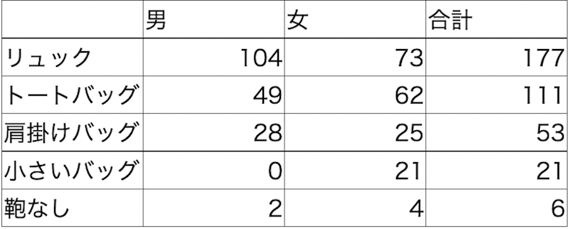

今回は、みなとみらいで街ゆく人たちの鞄の種類について路上観察を行いました。
観察場所は、みなとみらいキャンパスがある通りをセブンイレブンからぴあアリーナまでです。
観察した結果、下の表のような結果が出ました。

観察結果から、次のようなことが考えられる。
今回の観察では、みなとみらいというオフィスの多い立地とぴあアリーナの横を通ったこともあり、
鞄を持つ人がほとんどであり、特に多くの荷物を持つことのできるリュックやトートバッグを
使用している人が多かった。
また、私の当初の予想では、男性、特にサラリーマンがリュックや手持ちのバッグを持っていることは
予想していましたが、みなとみらいという立地上、肩掛けバッグや鞄なしの人が多いと予想していたので、
女性のリュック・トートバッグ率が高かったことが驚きでした。
さらに、今回の観察では、ライブ会場、しかも、ライブ開始前で多くの人がいる状況での調査になったため、
このような結果になりましたが、他のライブ会場近くではどうなのか、また、同じ場所でもライブがない日なら
どうなのかという点についても気になるところです。